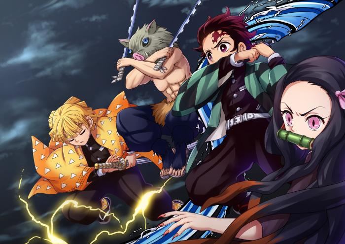

CV Highlights
- Currently i am a cse student who is completing his graduation and i am doing my cse 391 course
- Learnt basic Python, JavaScript, HTML, CSS on youtube.com.
- An independent, dedicated, efficient person. These attributes are proved through the series of courses I have taken or I am taking as of now independently through online platforms.
- Good Communication Skills, Presentation Skills, attitude towards leadership, authorisation and delegation, conflict resolution and negotiation and a very good team worker.
Professional Experience
I have done several projects on different course in my university life .In cse 391 i have worked on web development,in cse 470 and 471 I have worked in software development.In cse 370 in database.
Educational Qualifications
| Qualification |
Board |
Grades |
Year |
| S.S.C |
Dhaka |
A(4.56) |
2013 |
| H.S.C |
Dhaka |
A(4.64) |
2015 |
| B.Sc. (Hons) - computer science |
Brac University |
B+(3) |
2021 |
Self learned Courses
-
HTML & CSS for Beginners – Web Fundamentals – udamy.com
-
Python Beginners– Fundamentals and Dynamic Programming - udamy.com
-
JavaScript Beginners– Programming Basics, JS Apps and Build Games - udamy.com
-
Introduction to Hacking - Udamy.com
-
Introduction to Computer Science – youtube.com
-
Inroduction to Drawing - udamy.com
-
Introduction to chainise language -youtube.com
Technical Skills
-
Operating Systems: windows , linux and android
-
Application Software: microsoft office,web developing software
-
Programming Skills:HTML, CSS, Python, JavaScript, php,java
MY expectation
people always search for immortality but practically it is impossible but if we do some significent work in our life so we can be immortal so i want to do that so that people will remember me after my death.
Personal Information:
-
A young, determined hard and smart working person. I believe in task based roles and complete ownership of work.
-
Languages Known:English,Bangla,Urdu, Hindi,Chainise
-
Hobbies:I love reading Finance and IT related books / magazines, playing Chess, swimming, listening music, surfing Internet, self-learning through e-courses.
- Favourite quotes:
“Yesterday I was clever, so I wanted to change the world. Today I am wise, so I am changing myself.”
― Rumi
“Appear weak when you are strong, and strong when you are weak.”
― Sun Tzu, The Art of War
-
favourite albums
1."Crowded Table,” The Highwomen
2.“Simmer,” Mahalia ft. Burna Boy
3.“So Hot You’re Hurting My Feelings,” Caroline Polachek
4.“Too Much,” Carly Rae Jepsen
5.“Crime Pays,” Freddie Gibbs & Madlib
6.“Don’t Start Now,” Dua Lipa
7.“Juice,” Lizzo
8.“Welcome to the Party,” Pop Smoke
9.“Con Altura,” Rosalía x J Balvin
10. “Old Town Road,” Lil Nas X
-
Useful links:
1.Brac university
2.piazza
3.W3school
4.Facebook
5.Youtube
Other Information
Area of Interest:Software Development, Programming, Start-ups, Coding, App Development,Web development.
-
One last thing
I like to watch animies and this are my favourite animes

Home